Porous specimens must be manufactured on purpose. Scanning is slow, labelling is manual, and the porosity range in any real campaign is narrow and unbalanced.
A generator you can drive: name a porosity level and a stacking sequence, and receive a volume with that porosity, that ply layout, and realistic pore morphology.
A specimen scan is roughly 1024×1024×1000 voxels. Full-volume 3D diffusion does not fit in memory, so generation must be patch-based — and the patches must agree with each other.
The through-line of this talk: every design decision came from a measurement, and most of the interesting ones came from a measurement that showed the previous decision was wrong.
A KL-regularised VAE plus diffusion produces high-fidelity binary porous media, and scalar porosity conditioning implicitly carries permeability, TPCF and pore-size distribution. This is the domain precedent for choosing KL over VQ.
No spatial control inside the volume, no assembly beyond one 256³ cube, no cross-patch consistency mechanism, no fibre-reinforced composite — where the microstructure has a direction that rock does not.
The LDM framework itself: compress with a KL autoencoder trained with perceptual + adversarial losses, then diffuse in the latent. Also the source of the unit-variance latent rescaling.
First 3D brain-MRI LDM. VQ first stage, diffusion over 2D slices of the latent volume, conditioned on age and sex. Argues VQ suits near-binary data.
Patch-based 3D LDM with a VAE at f=4 on 64³ patches — the direct architectural precedent for PoreGen's patch size and compression factor.
Med-DDPM concatenates a segmentation mask in pixel space. Wang conditions on scalar bone metrics and extends volumes with a shifting slab. Both assemble by passive blending.
Every one of them either generates a single fixed-size volume, or assembles larger ones by blending decoded patches. None conditions a patch on what its neighbours already contain. That gap is where PoreGen's method sits — and, as slide 23 shows, it is also where the hardest bug of the project was hiding.
All five are training-free. PoreGen instead trains the neighbour conditioning — and then, at the end, adds MultiDiffusion-style prediction fusion at inference anyway, because the trained conditioning alone did not close the seams.
If masked diffusion is implicitly a learned-order autoregressive model, then a fixed deterministic order — checkerboard parity — is a principled special case, not an ad-hoc simplification. That is the licence for D23: train only the two neighbour states that inference will actually meet.
The lesson learned the hard way: an order is only "independent within a phase" relative to a patch spacing. Order and spacing must be reasoned about together.
MAR measures a clear gap at the same tokeniser stride: KL-16 reaches FID 3.50 against VQ-16 at 7.82 with an identical diffusion loss. Pinaya argues the opposite for near-binary MRI. Naiff — same domain as us — uses KL.
Zhao 2017 explains why the ELBO's KL term makes VAEs blur. Free-bits puts a floor under each channel so it cannot satisfy KL by going silent. VRRAE later proves collapse is structurally bounded in an SVD bottleneck.
Larsen 2016 and Rombach 2022 use a discriminator to push past the per-pixel ceiling. Naiff shows reconstruction loss alone is enough for porous media. We started with Naiff's position and later moved to Larsen's.
RRAE replaces the KL term with a truncated SVD on the bottleneck: no divergence weight, no free-bits floor, and an adaptive variant that discovers its own rank. VRRAE adds probabilistic sampling on top and proves the collapse bound. It is the most principled alternative to the hyperparameter tuning that D3 and D20 spend their time on — which is exactly why we tried it, and why the negative result on slide 13 is worth reporting.
Gayon-Lombardo and SliceGAN set the standard for microstructure: two-point correlation S₂(r), pore-size distribution, physical transport. Naiff adds slice-FID and Wasserstein-1 on PSD. PoreGen follows this lineage and adds seam discontinuity, which none of them need.
Layup A — [45 / −45 / 90 / 0 / 45 / −45 / 0 / 90 / −45 / 45], 10 plies, Hexcel 0.508 mm cured ply thickness. Carried by 74 of 78 volumes: all Pegaso and all Nacho.
Layup B — [−45 / 90 / 45 / 0]s, 16 plies, IM7/M56 at 0.25 mm. Four Juan Ignacio volumes.
Voxel size 25 µm for every campaign. Splits are stratified across families.
Those specimens were manufactured deliberately to induce porosity, so the project would have porous samples at all. It is a property of the dataset, not a defect in it — but it does mean porosity is confounded with material family, which the conditioning has to be able to separate.
74 of 78 volumes carry one stacking sequence. There is essentially no across-specimen variation in layup to learn from — the variation the model sees is within a specimen, ply to ply. This constrains every generalisation claim in this deck.
Raw TIFF stacks per campaign, written to Zarr with 64³ chunks and no compression — one patch read becomes exactly two chunks.
onlypores: Sauvola local thresholding for pores, Otsu plus fill-voids for the material mask. Memory-aware, parallel or sequential.
3D integral volume gives O(1) porosity for any patch. Coordinates at stride 32 written to a Parquet index.
Flat float16 memmap for the loader. Random reads went from 150 to 4 704 items/s — 31× — and random access is all a DataLoader does.
The pore intensity component sits at −2.96σ under per-volume z-score, so any standard ±3σ clip deletes the pore signal entirely. Every volume saturates the uint8 ceiling in the solid matrix, so a global x / 255 is equivalent to per-volume max-normalisation with no per-volume statistics and no clip.
Sauvola's threshold is a deterministic function of the local intensity mean and variance. The mask therefore adds no information the XCT does not already carry — which is the argument that later removes it from the encoder input (D14) and keeps it only as a supervision target.
Four patches in one volume carried φ > 1.0 from a summed-area-table overflow and are dropped at load time. Voxel size is not recorded in the dataset metadata — it has cost time twice, and the ply pitch still cannot be reported in µm from the data alone.
At f=4 a 2-voxel pore maps to about half a latent cell. Individual pore positions are below latent resolution by construction, so Dice is capped around 0.2–0.3 for a correct model. The success criterion is therefore porosity-MAE < 0.005, roughly a tenth of the mean φ of 0.055.
S₂(r) at r=30 sits 4.73× above φ², and the spectral peak of inter-cluster spacing is 42.7 voxels. Pore clusters are larger than one patch. A patch-independent model would produce plausible local density and wrong global structure.
A 3-component GMM describes the histogram: pores at 37.65, an interface mode at 188.0, solid CFRP at 209.61 with 83.6% of the mass. Global mean 191.66, σ 52.02. Pore/matrix overlap coefficient is 0.045 — well separated in intensity, but the best achievable threshold Dice is only 0.22 because the pores are sub-voxel.
Exterior air is not labelled as porosity anywhere in this pipeline. Every analysis built on the mask alone is blind to it. That blind spot survives untouched until slide 31, where it turns out to be the largest open problem in the project.
Two of these did not survive contact with data. D8 (bottleneck self-attention) and D9 (2-channel encoder input) were superseded within a month, by D13 and D14 on the next slide. The log keeps them as one-line tombstones rather than deleting them.
train/active_channels reported 8/8 throughout — the metric is broken when free_bits = 0.
free-bits restored
The mask is a deterministic Sauvola function of local XCT intensity and variance, so in principle it adds nothing. PCA agrees: XCT alone and XCT+mask both give k@90% = 9. It stays as a supervision target, not an input.
XCT Charbonnier settles at ≈0.030 from step 2000 in every run, R00 through R03, regardless of architecture, schedule or latent width. A per-voxel loss cannot tell a sharp reconstruction from a blurry one with the same mean error.
R00–R02 showed val porosity-MAE below 0.001 against test at 0.021–0.031. Not overfitting — the splits were not stratified by porosity, so val and test described structurally different volumes. Fixed before R03.
R03's error is false-positive dominated: the mask head hallucinates pores when it has to segment from XCT-only latent features. That is what D17's focal loss is aimed at on the next slide.
2D PatchGAN on random axial, coronal and sagittal slices. LSGAN, spectral norm, its own optimiser. Three orthogonal views implicitly enforce isotropy.
Replaces BCE. At 2% porosity the gradient is dominated by easy background; (1−p)² downweights it and concentrates on the boundary voxels where the false positives live.
Two parallel encoder stacks on the same XCT input, fused before mu/logvar. Tests whether the limit is capacity or misallocated capacity between two competing objectives.
Branch cosine similarity of 0.066 means the two branches learned near-orthogonal representations — the split was used, not ignored. Combined with D17, mask Dice reached 0.781, far above the 0.2–0.3 ceiling the EDA predicted for a single-pathway model.
Porosity bias −0.000184, essentially zero. Precision 0.810 above recall 0.762: focal loss moved the model out of R03's false-positive regime into a slight false-negative bias, which is the correct direction for a porosity estimate.
Volume-level sharpness ratio 0.12–0.27: reconstructions are 4–8× less sharp than ground truth, so the texture plateau survives a discriminator at weight 0.01 — hence D19. Pore count is under-predicted by 33–69%: the model merges adjacent sub-voxel pores while getting their total volume right.
Wasserstein-1 on the pore-size distribution is 0.48 and 2.65 on the low and mid-φ test volumes, but 115.4 on the high-φ one: a few giant merged pores. Pore volume is captured; pore topology is not, and it fails worst exactly where porosity matters most.
Encoder gradient norm: median 873, maximum 4.2×10⁷, drifting upward window over window, while the decoder stayed flat at 0.08–0.3 the whole run. Suspect: the SVD backward's 1/(sᵢ² − sⱼ²) term with near-degenerate singular values.
The decoder was fed raw SVD coefficients instead of Y = U·α, and the vendored SVD backward was wrong. Fixing both moved reconstruction from 0.121 to 0.082. A misread of mu_n_active ≈ 0 as posterior collapse also sent a whole run chasing free-bits — the coefficients are simply ordered by singular value.
Same flat bottleneck, same dimensions, same everything, with the batch-SVD layer swapped for plain Linear heads. Linear reached 0.0784 against SVD's 0.1058 — about 26% better. The flat latent was not the limit; the batch-SVD machinery was.
The discoverable rank is bounded by min(batch, L), so latent width and batch size stop being independent knobs. The basis is re-estimated per batch in a high-dimensional feature space, so it rotates during training and then mismatches the finalised basis used at evaluation. And a flat latent deletes the 3D spatial structure that the neighbour and orientation conditioning of the entire LDM stage depends on — adopting it would have meant redesigning the denoiser from scratch.
Eight runs, about one week. Closed as a documented negative result; the spatial KL bottleneck stays in production.
Even after both bug fixes, VRRAE reconstruction sits about 3× worse than the spatial baselines. The comparison is not fully like-for-like — the VRRAE variant has no mask head and no discriminator — so this refutes the bottleneck as a drop-in replacement here, not the method in general.
The degradation curve is remarkably flat. Sixteen times the compression costs about 11% of reconstruction quality in the XCT-only sweep (0.0327 → 0.0363), and 16% across the full 2× → 64× range with the mask head. Only z = 1 degrades both metrics at once. For the diffusion stage, aggressive compression is cheap. Best porosity-MAE actually lands at 8×–32× (0.0015–0.0016) — the narrow neck regularises the mask head.
R06 XCT only, no mask head. R05 XCT in, mask out. R07 mask in and out. The same z axis in all three separates the mask's value as an input from its value as a task, revisiting D14 under a uniform protocol.
Samples from the pure factorised prior decode to almost empty masks, φ ≈ 0.0005. Porosity does not live in the latent marginals; it lives in the structure of the latent. So the diffusion model does not merely have to produce plausible values — it has to land on the manifold. Every diagnostic from here on is built to measure exactly that.
R07's porosity-MAE (0.00024 at 2×) is not comparable with R05 or R06: with the mask as an encoder input, the mask task is near-autoencoding rather than prediction. And val.total cannot be compared across z at all — per-channel KL summation plus the free-bits floor makes it scale with channel count.
A one-hot "specimen family" input can only ever reproduce the three materials in the dataset. A new stacking sequence would be an unseen class — impossible by construction.
A continuous orientation field instead lets the model learn local orientation + local porosity → texture + voids. A novel layup then becomes a recombination of parts it has already seen.
Generate arbitrary stacking sequences. Whether an unseen layup generates well is an open empirical question — it is out of distribution by definition. But this encoding is what makes the question askable at all.
Nine measurements, T-A to T-I, decide which signals enter the conditioning vector and how each one is encoded. None of them was chosen by intuition.
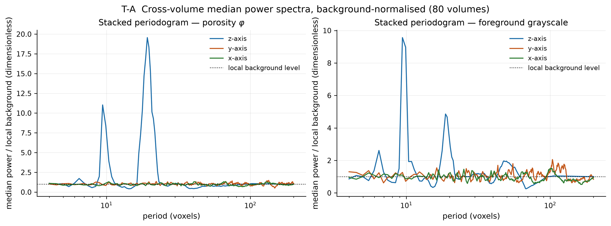
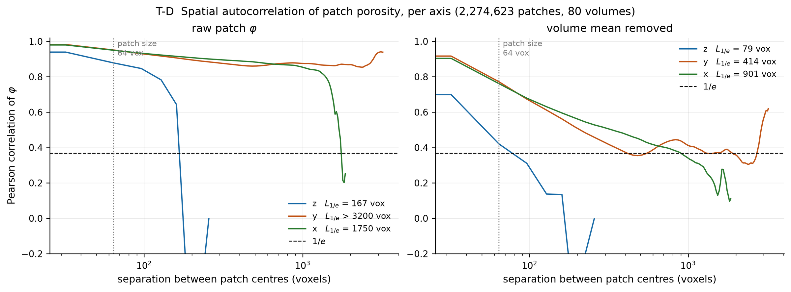
The per-volume z peak falls inside 18–22 voxels for 70% of 80 volumes; the same band fires in y or x for only 1.3%. Median excess: 25.2× in z against 4.5× and 4.0×. Correlation lengths run 79 voxels in z to 901 in x — 1.2 to 14 patch widths.
Voxel-level autocorrelation has a secondary peak at lag exactly 20. Separately, porosity maxima coincide with ply interfaces: correlation +0.257 at zero lag with the orientation change rate, positive in 85% of volumes. The periodicity is ply-interface driven.
A 64-voxel patch spans ≈3.3 plies. One angle per patch would erase the ply sequence inside the patch — which is exactly the structure we want to control. Orientation must be depth-resolved, and neighbour conditioning is justified by the r values on the right.
The patch index cannot see any of this: stride 32 puts the Nyquist limit at 64 voxels, above the ply pitch. It took an exact 1-voxel pass over all 80 volumes to find. Narrow spectral lines also fire in y and x in 58–65% of volumes at scan-dependent periods — per-scan artefacts that vanish under median stacking.
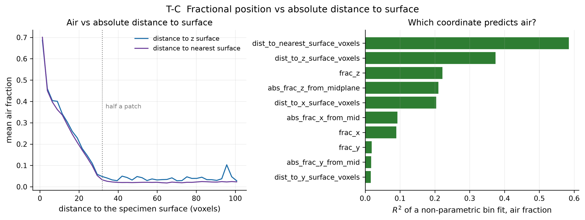
Air decays to interior background at 32 voxels — exactly half a patch — and is flat beyond. Distance-to-surface therefore enters the conditioning vector as its own signal, while in-plane x/y position is dropped: nothing measured varies with it.
Exterior air is not labelled as porosity, so any mask-only analysis is blind to it — an earlier check that looked only at φ wrongly concluded border patches did not exist. The model therefore learns that air is free. This single fact is the root cause of the failure on slides 31–32, and the reason ldm06 exists.
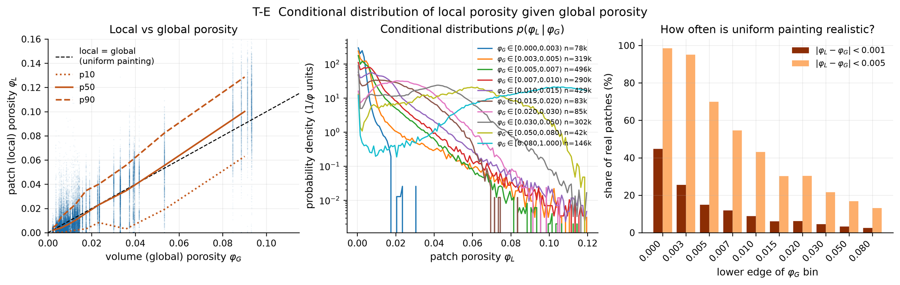
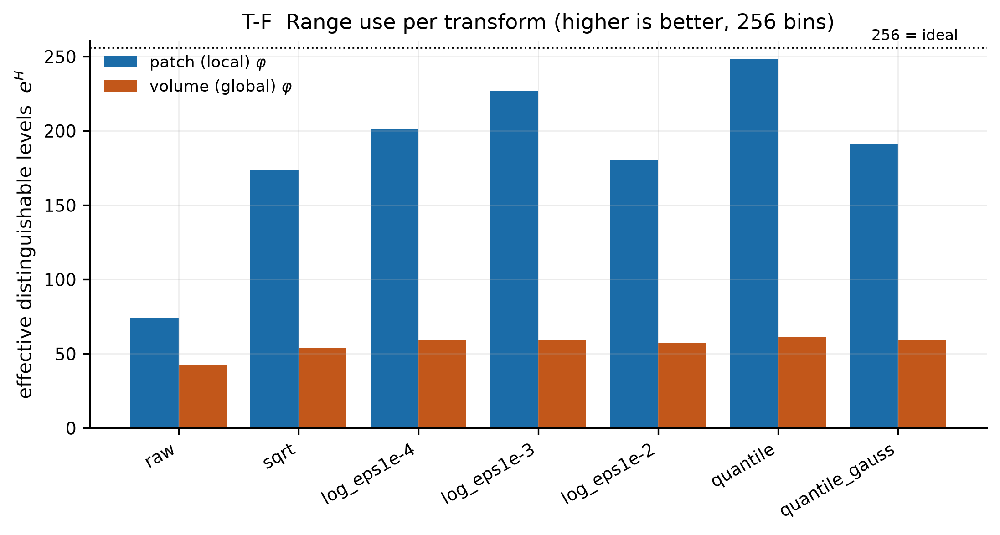
Only 12.9% of real patches sit within 0.001 of their own volume's mean porosity, and only 53.4% within 0.005. Painting one global number into every patch's local channel asks for a configuration the data almost never contains — and it was the source of the local/global conflation bug in the earlier conditioning code. At inference we instead sample one coherent field over the volume, smooth it to the T-D correlation lengths, and rescale its mean to the requested target.
Raw φ resolves 74 of 256 levels and puts the median at 5% of the input range. The log transform gives 227 levels and moves the median to 42%. A quantile transform scores marginally higher at 248 — and was rejected: the log is analytic, invertible, extrapolates beyond the training range, keeps its physical meaning, and is not tied to this dataset, which matters for the planned public-data transfer.
Porosity control is confounded with material family in this dataset — Nacho at 0.0223 against Pegaso at 0.0121. The conditioning has to let the model tell them apart, or a dose-response curve will show a mixture bias that looks exactly like a conditioning bug.
Circular dispersion 0.145 for Nacho, one angle mode, ply steps near 0°. Read as "the dataset is not one material — Nacho is unidirectional." The domain expert disagreed.
52% of Nacho ply blocks show two lobes at a median 85° separation, and the two directions trade power ply by ply at −0.32 correlation, negative in 94% of volumes. A careful, internally consistent analysis. Also wrong.
Both read the ply angle off the absolute angular power density, which is dominated by a volume-constant term — mounting angle, _aligned resampling, ring and stripe artefacts. T-G read that constant as a single fibre direction; T-H read the same constant as a fixed second lobe 90° away.
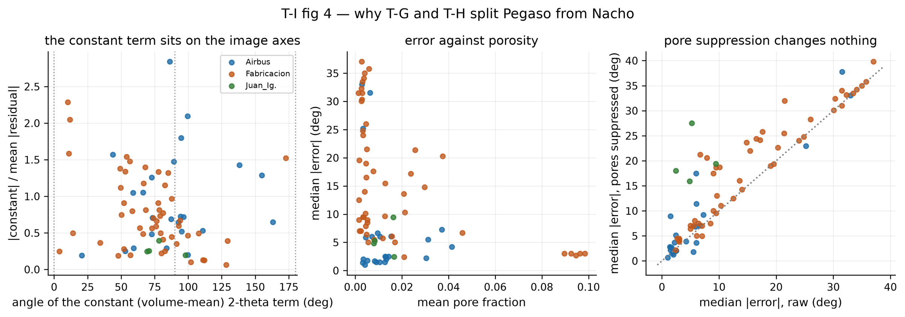
Hypotheses tested and rejected before landing on the subtraction: a different voxel size (it is 25 µm everywhere), porosity bias (the sign reverses — suppressing pores makes the estimate worse, so pores are signal), and the 0/90 axis excision (a full window × excision factorial moves accuracy by only 0.1–0.3 points).
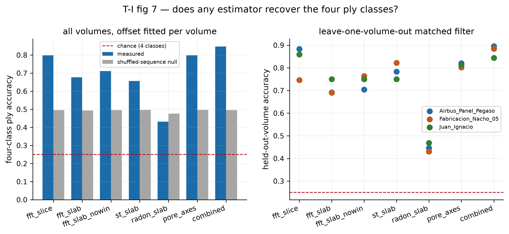
Rk(θ) = ⟨h(θ)⟩ply k − ⟨h(θ)⟩volume θk = argmax Rk(θ)
Median per-ply error 4.7°, 28% of volumes read perfectly. Per family: Pegaso 84.6, Nacho 85.2, JI 79.7 — the families the earlier tests separated are now indistinguishable, exactly as ground truth requires. That is the validation.
Pool the components, never the angle — averaging θ is wrong across the 180° wrap. Do not renormalise the pooled vector: where a plane straddles an interface, the shrinkage is the interface signal. Build θ(z) from the nominal sequence aligned to the scan, never from measured residuals.
Global volume porosity (redundant once the field sets the mean, and the source of a real bug). In-plane x/y position (nothing varies with it). The 4θ term (one nominal angle per ply makes 2θ sufficient). Measured waviness — that is material variation for the model to generate, not a control input.
The 84.7% is oracle-aligned relative agreement, not autonomous accuracy: the global rotation offset and hypothesis selection use the nominal labels. The estimator is validated for one coarse angle per ply on this layup — not as a local orientation estimator, and not for unidirectional laminates. The original justification, "the volume mean is isotropic", is also false; the correct description is within-specimen common-mode contrast.
Anchor patches see every in-bounds neighbour as UNKNOWN; non-anchors see them all as EXISTS. The model is never shown a mixed state, because inference never produces one. Training distribution equals inference distribution by construction — chosen over random neighbour dropout for exactly that reason.
Generated patches produced bad masks. The obvious suspect: we feed the decoder a clean μ point estimate, off its training support. So we swept z = μ + s·σ·ε over s ∈ {0 … 1} on real reconstructions.
Mask quality is better at clean μ, not worse. Hypothesis rejected: the decoder handles μ fine. The damage is upstream — the generated latent is a poor approximation of the encoder posterior. That is what sent ldm02 to train on sampled z = μ + σε.
ε-MSE is not comparable across the μ and μ+σε targets: ldm02's 0.48 against ldm01's 0.20 is expected, not a regression. A per-timestep breakdown shows the gap is the irreducible σ·ε floor at low t, given the VAE's σ ≈ 0.87 — not a normalisation bug.
ε̂ = ε(∅) + spor·[ε(por) − ε(∅)] + snb·[ε(por, nb) − ε(por)]
Two guidable buckets, not five. The neighbour summary is pooled inside the UNet, so neighbour latents, availability and summary are inseparable; position is a weak boundary signal not worth its own pass.
Asymmetric nulls. Zero is a valid porosity, so porosity gets a learned 512-dim null embedding. Neighbours already have a null — all-UNKNOWN is exactly the anchor state, so it costs no new parameter.
Nested, not symmetric. Porosity and neighbours are correlated, and symmetric high-scale guidance on correlated conditions drifts off-manifold. Nested measures neighbour guidance given porosity, at 3 denoiser calls per step instead of 6.
The run finished and the loss looked fine. The samples were off-manifold by a factor of seven and nobody was measuring it. Worse, the first-stage VAE checkpoint for this rung was later lost, so no ldm03 output can be decoded at all — the run is unrecoverable, not merely bad.
Latents are now normalised per channel using train-split statistics stored in the latent store, validated against the VAE checkpoint at load time and failing loudly on mismatch. And ldm04 was defined as an unconditional rung from scratch, whose only job was to prove the normalisation fixed the off-manifold failure before any conditioning work resumed.
The guidance sweep was never run on ldm03; s_por and s_nb stayed at 1.0, where the nested form telescopes to the plain conditional. Every piece of evidence about whether the conditioning works therefore comes from ldm05 — nothing in this deck rests on ldm03 outputs.
With neighbours at offset 32, the +z neighbour reproduces the target's overlapping region at MAE 0.067, against 0.744 for a random patch — a ratio of 0.09. The neighbour latent was very nearly a literal copy of half the target.
Opposite neighbours invert the same parity bit, so they always fall in the same group and always arrive together. One opposite pair tiles the target completely: −z supplies latent cells 0–7, +z supplies 8–15, across the full y and x extent. Result: 7 of the 8 parity groups received the target's entire content. The model would learn to copy, not to generate.
By a loss that was too good. The contaminated ldm05 run hit val 0.497 at step 1000 — already below ldm04's best-ever 0.524 at step 36k. The first reading was "the conditioning is informative." The information was the answer.
neighbour_offset = 64 — neighbours now touch, sharing zero voxels. generation_stride = 64 — exact tiling, no overlap, and therefore no blending. sample_stride stays at 32, since dataset density was only ever a data multiplier. No dataset rebuild was needed: neighbours at ±64 are two steps of the existing stride-32 grid and were already in the store. This repealed two of the three assembly fixes decided two days earlier — both solved problems that only exist when neighbours overlap.
Blending conceals disagreement rather than resolving it. With exact tiling, continuity rests entirely on the learned conditioning, and seam quality becomes a measured quantity instead of a disguised artefact.
The tempting alternative — a denser grid with averaged overlaps — is unsound for the same reason: the mean of two independent unit-variance latents has variance ½, so every seam would feed the decoder systematically shrunken latents. It also multiplies the dataset by 8 (≈18 M patches, ≈860 GB) and does not fix the leak.
Across its entire run, ldm04's full-validation loss improved by 2.9% — while its samples went from garbage to near-manifold. Every small improvement reset the patience counter. Stopping decisions come from the B-metrics flattening; early stopping is a backstop only.
EMA lag. At decay 0.9999 the averaging horizon is ≈10k steps. At step 20k, ldm04 measured 7.1 on EMA weights while the raw model was at 3.8. Judge early training on raw weights.
Bucket blindness. The zero-neighbour case is the rarest in training, 1 group in 8. Measuring only it gave 4.30 when the same checkpoint with real context was at 3.59 — and nearly triggered an unnecessary restart. Every check is now split by 0/2/4/6 neighbours, weighted 1/3/3/1.
B1 is crude by design — it sees spread, not content — so it is the first gate, never the last. And while saturation is high, B2 biases B1 downward, because clipped values understate spread: the two are not independent until saturation drops.
Neutralising one input at a fixed seed moves the output by a measurable fraction of the total noise scale: porosity from 9% to 13.7% and orientation from 6% to 11.0% over training. And ldm05's raw wildness (1.53) beats ldm04's (1.9–2.1) — the conditioning improves the manifold fit rather than fighting it.
STALLED arrives exactly at the end of the cosine schedule. Earlier, early stopping had cut the run at 112k while the D39 diagnostics were still improving — precisely the failure mode D39 documents. It was resumed with patience 0 to let the schedule finish.
Wildness stalls at ≈1.65 raw and 1.78 EMA. The gate is ±10% of 1.0. DDIM-200 gives 1.57, so more steps help slightly but do not close it.
Degenerate masks at 14–16% against a real rate of ≈6%.
x̂₀ saturation 2% at DDIM-50; only DDIM-200, at 0.5%, meets the <1% gate.
The 1.53 reading at 106k was n = 8 noise. The patch φ error oscillates around the gate: 0.0037 → 0.0045 → 0.0056, with the well-conditioned buckets at 0.002–0.003 and the sparse-context buckets at ≈0.009.
One training run. Batch size, learning rate, warm-up, weight decay and gradient clipping were inherited and never swept — they must be reported as untuned. Nothing here separates the contribution of the architecture from that of the schedule.
Overlapping windows at stride 32 denoise jointly: ε predictions are fused on one shared latent canvas at every DDIM step, and the canvas is decoded once at the end on the stride-64 tiling grid. This is MultiDiffusion's mechanism, applied inside the reverse process — inference-time only, no retraining, exactly as pre-registered.
Averaging decoded patches, or averaging latents, is unsound: the mean of two independent unit-variance latents has variance ½, which is systematically off-manifold — the same defect class as the decode-scale bug. Averaging the model's ε predictions inside the reverse process is the principled form.
Seams nearly halved — expected. But the volume-porosity overshoot largely disappeared too: joint mode delivered the requested porosity almost exactly, where sequential delivered ten times the request. The long-standing "global porosity comes out far above the target" mystery was, in substantial part, an assembly artefact.
At the 130k checkpoint a single-seed rerun appeared to invert this result, with joint mode delivering 0.0478 for a 0.02 request. Three seeds showed it was seed noise: the mean is 0.0359 ± 0.0072. No conclusion in this deck rests on a one-seed comparison — which is why the next slides use 153 volumes.
Sequential generation on the eight-group parity schedule, with trained neighbour latents and true distance-to-surface. The mode the model was actually trained for.
Joint denoising with neighbours set all-UNKNOWN — the overlap supplies context implicitly — but true distance-to-surface. Internally contradictory at the volume edges; kept as an evaluation arm.
Joint denoising with directional out-of-bounds encoding on the faces that leave the volume, plus true distance-to-surface. The volume is treated as being the whole specimen.
If the generated volume is the specimen, then near its faces the conditioning legitimately asks for exterior air — because near-surface training patches contain unlabelled exterior air (T-C). The arm is not misconfigured; it is faithfully requesting something the training data never labelled. Holding this hypothesis explicitly is what let the audit on slide 32 refute it as the main explanation.
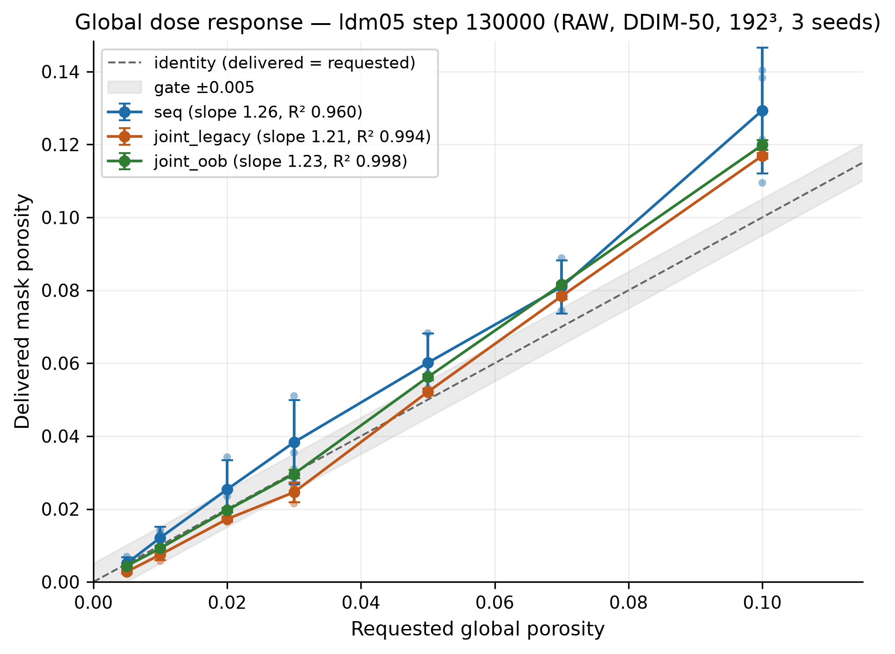
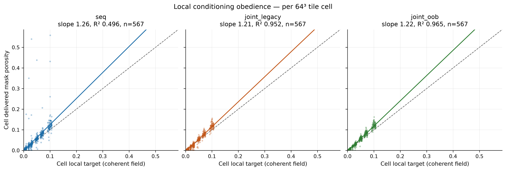
Globally all three arms look similar. Locally they do not. Sequential obeys the local field at R² 0.496 with runaway cells up to 0.51 absolute error; joint_oob obeys it at 0.965, median absolute error 0.0030. The local conditioning is honoured in joint mode and largely ignored in sequential mode.
Every arm overshoots with a slope near 1.22. joint_oob passes the volume gate 3 seeds out of 3 at every target ≤ 0.03, and both joint arms fail at targets ≥ 0.07. Fewer than 60% of individual cells fall inside the gate even in the best arm.
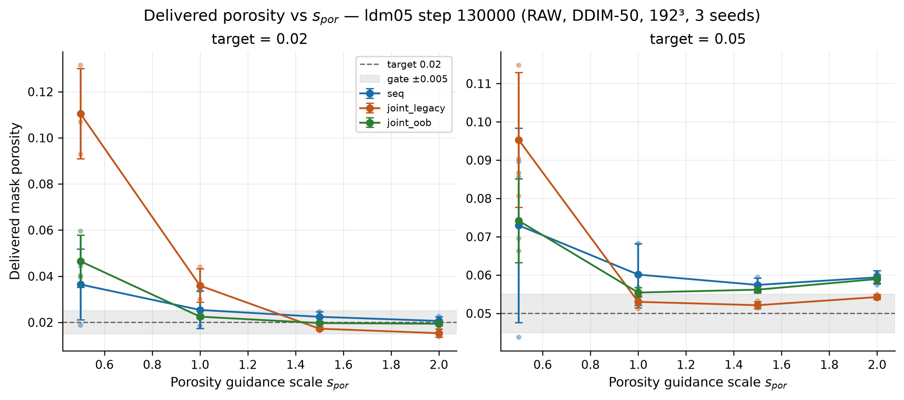
The bias was under-guidance, not a structural defect. joint_oob at s_por 1.5 hits |error| 0.0006 at target 0.02 — the best porosity control the project has produced.
Guidance is also a variance clamp. Seed spread falls by a factor of 4 to 10 when guidance is on.
Sanity holds. At s_por = 0 the model delivers ≈0.21 and ignores the request entirely, so the conditioning pathway is genuinely doing the work.
No single guidance scale covers the range. The optimum decreases as the target rises — about 1.5 below 0.03 and about 1.0 above it — and raising s_por to 1.5 range-wide rotates the curve (slope 1.02 → 1.21) so the high end overshoots again. A monotone s_por(target) map is a candidate recipe, and it is not yet validated on unseen seeds. Guidance also degrades seams gradually, from 2.2 to 3.1.
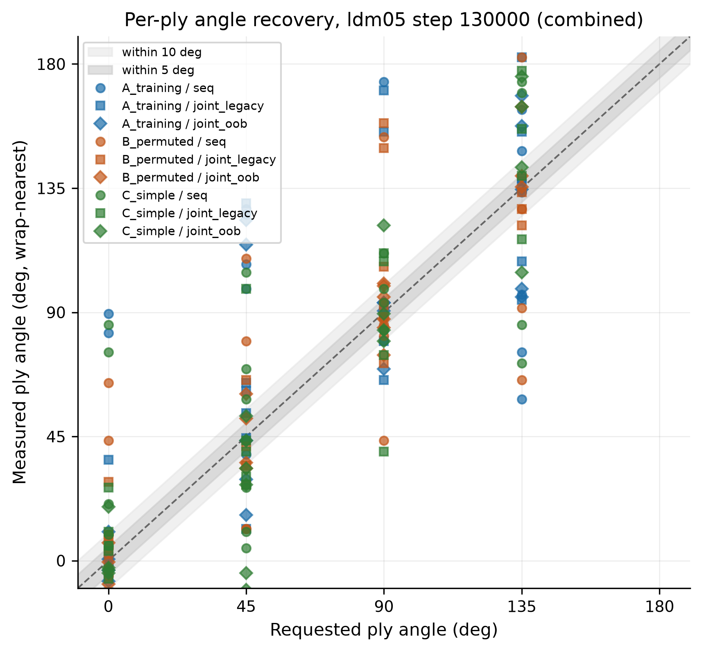
Recovery through the pore principal-axis channel correlates at R = 0.63; through grayscale slice FFT, at R = 0.07. The ply sequence is written into where the voids sit, not into the grey texture. Individual fibres are not resolved at 25 µm, so this is the physically sensible channel.
Sequential mode degrades angles and loses porosity control on unseen layups (0.059 for a 0.03 request), with the error growing as the layup moves further from the training sequence. Joint mode recovers both — so the failure was not the model being off-manifold, it was how the patches were put together.
74 of 78 training volumes share layup A, so B and C demonstrate generalisation rather than validating it — with two seeds each. The ±45 sign ambiguity documented in T-I persists in the generated volumes. And the pooled combined estimator is much weaker on generated volumes (53%) than the pore-axes channel alone, so the headline numbers are channel-specific.
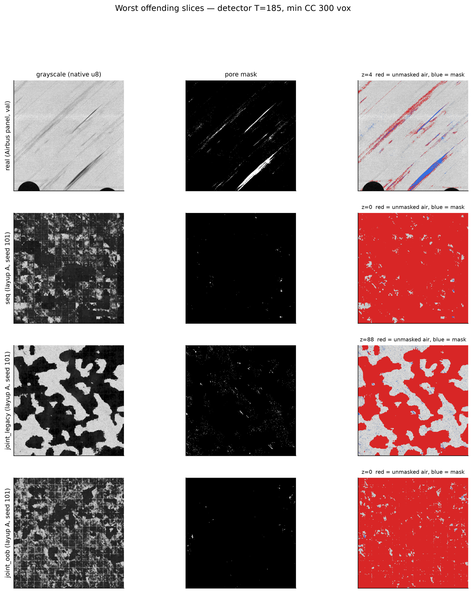
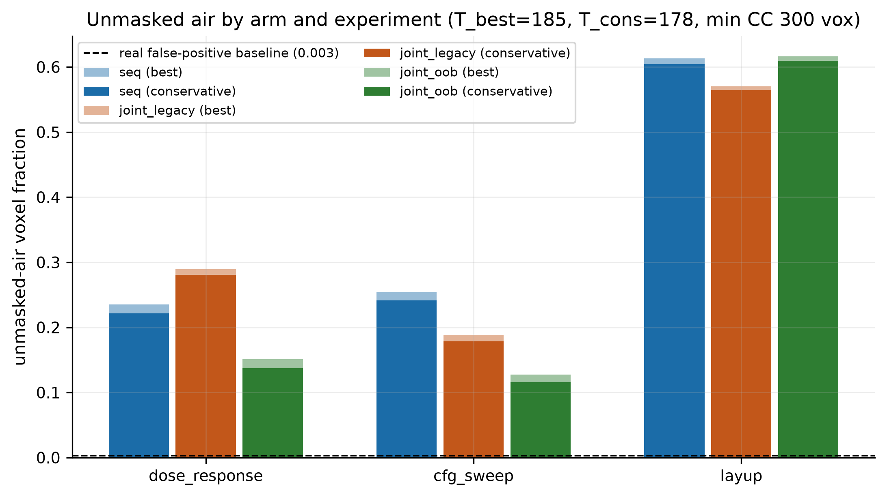
Decoder-native u8 scale, calibrated on three real volumes against their ground-truth masks. Best estimate T = 185 at pooled pore Dice 0.799; a conservative bound at T = 178 chosen so false positives on real volumes stay ≤0.2%. Measured real baseline 0.002–0.003, with a 300-voxel minimum component so only coherent air masses count. Every generated number sits one to two orders of magnitude above that baseline, in every arm.
The detector is a grayscale threshold, and real masks are themselves annotations that miss some dark features (drilled holes, edge effects), so pooled Dice ≈0.8 is the ceiling. Every number carries a conservative lower bound and a ±σ sensitivity band of about ±0.02–0.05. A material-mode cross-check (generated mode ≈208 against real ≈209) rules out a brightness artefact.
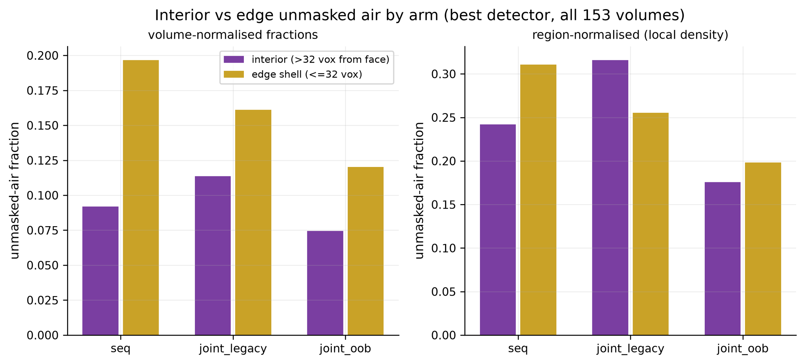
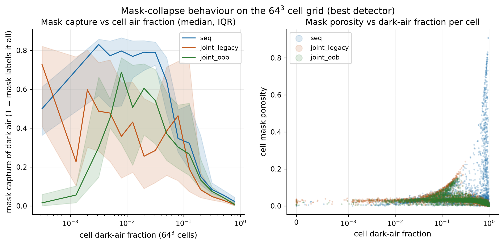
If specimen semantics were the cause, the excess would sit at the edges. It does not: joint_legacy carries more interior than edge air (0.32 against 0.26), and in the large layup volumes interior air is 0.35–0.42 of the whole volume in every arm. The semantics explains the edge excess at most — it cannot explain the interior.
Largest unmasked connected component: median 8–23 mm³ per 192³ volume, and 1800–2200 mm³ per layup volume — an equivalent diameter of 15–16 mm, a single mass spanning the volume. This is not scattered noise; it is structure.
Per 64³ cell, dark-air fraction and mask/grayscale disagreement correlate at r = 0.95–1.00. Sequential holds capture near 0.8 up to ≈5% cell air and then collapses; both joint arms capture only 0.3–0.5 even at low air. Above ≈15% cell air, capture is 0.02–0.03 in every arm.
Absolute mask-based porosity numbers seriously undercount the real air content at large scale, and the material description they imply is not trustworthy there. The 192³ dose-response curves keep their comparative value between arms — a like-for-like ranking — but the absolute φ claims at 1024 scale do not survive this audit. Bigger canvases are worse: ≈0.6 unmasked air at 1024 against 0.13–0.29 at 192³ in the same arms.
One training run. No seed variation at the training level, and the optimisation hyperparameters were inherited, never swept.
Few seeds at evaluation. Three per cell, two for the layup experiment. Seed spread is reported, but the distributions are not tight enough for fine per-cell ranking.
One layup family. 74 of 78 volumes. Generalisation to new stacking sequences is demonstrated, not validated.
No baselines yet. SliceGAN, a pixel-space DDPM, and a Naiff-style comparison are deliberately scheduled after porosity control closes — so there is no external reference point in this deck.
No downstream evaluation yet. The synthetic-to-real segmentation transfer that would prove usefulness has not been run.
Control works and is measurable. The generated material is not yet trustworthy at large canvas scale.
onlypores already returns a material boundary. Store it per patch at latent resolution and feed it as an input channel. At inference it is painted: all-material for interiors, "no material here" outside the specimen, arbitrary shapes as a new generative control.
ε-MSE is blind to air and to φ. Add an auxiliary term in decoded x̂₀ space at low t: air outside the material map, |mask mean − conditioned φ|, grayscale/mask agreement, and the real patch mask. Same objective, reweighted in the space that matters. Cost ≈1.3–1.5× per step.
Today the trained neighbour channels have no valid input in joint mode, so they are set all-UNKNOWN. Train them with random corruption at a declared noise level, then feed them at inference from the canvas x̂₀ at ±64 voxels, with a per-neighbour descriptor.
Replace the single distance-to-surface scalar with six per-face distances, consistent with the OOB flags — so "which way is the outside" is expressible, not just "how far".
Unmasked interior air ≤2% at 192³ and ≤8% at 1024 scale (against 15% / 38% today). Mask pore capture ≥0.8 in cells with ≤5% air (against 0.3–0.5). No regression on E2: local dose-response R² ≥0.95, unseen layups ≤5° median. Budget ≈2.5 GPU-days for the base run, 7–8 days including the two ablations.
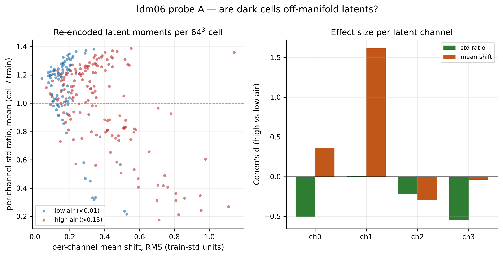
High-air cells are not wilder — std ratio 0.98 against 1.08 — but they are displaced: per-channel mean shift 0.383 against 0.178 in train-std units, Cohen's d = 1.17. One channel carries almost all of it, correlating with dark-air fraction at r = 0.956. The failure is a mean shift in a specific latent direction, not a variance blow-up — which is what makes a targeted conditioning and loss fix plausible.
DDIM step sweep {50, 100, 200, 300} to separate discretisation from model error · baselines (SliceGAN, pixel DDPM, Naiff 2025) · downstream 3D U-Net synthetic-to-real transfer · Paper 1 to IEEE TIP, November 2026.
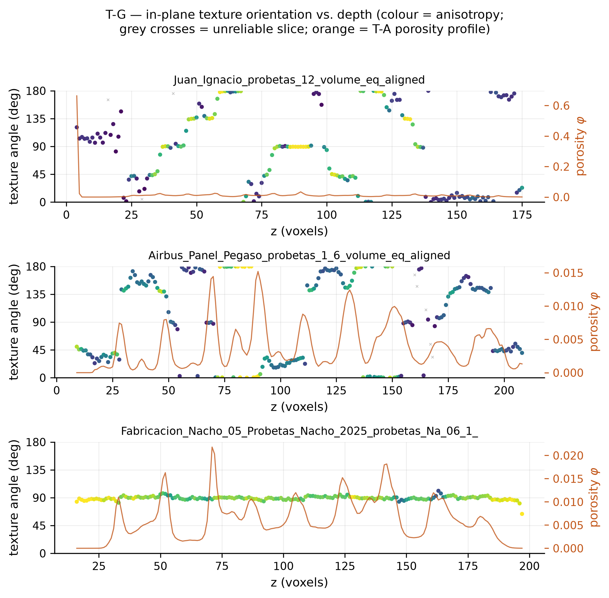
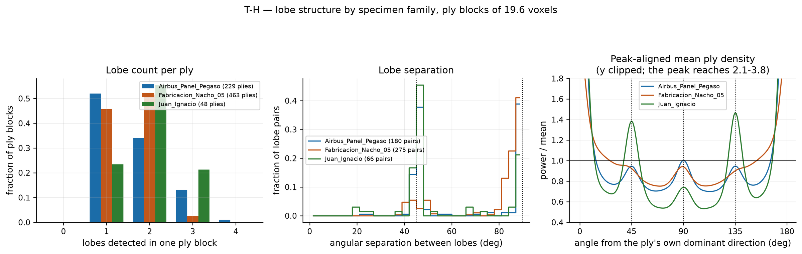
Ply interfaces coincide with porosity maxima: the porosity profile correlates with the orientation change rate at +0.257 at zero lag, positive in 85% of volumes, and 98% of the strong cases peak within 3 voxels of zero lag or one ply pitch. That is a genuine, independent confirmation of the T-A periodicity — and a good physical story for the paper.
Individual fibres are not resolved: a 7 µm fibre is about one voxel at 25 µm. Anisotropy grows with scale — 0.071 at 8–16 voxels, 0.188 at 16–64, 0.333 at 64–256 — so the signal is tow-level: tow bands and resin channels, not fibres.
The discrete FFT puts kx = 0 and ky = 0 into single angular bins, producing a one-bin spike at exactly 0° and 90° in every volume. Excised; ±1° against ±3° excision moves the coefficients by under 8%. The 8 Nacho volumes with lobes ≥10° off both image axes show the +90 lobe more clearly, at 62% excess — a geometric artefact would co-vary positively, and it does not.
Both analyses were internally careful and both reached a wrong conclusion, because both asked the absolute-density question. T-H's own cached data was what made the diagnosis on slide 19 possible — the analyses were not wasted, they were the instrument.
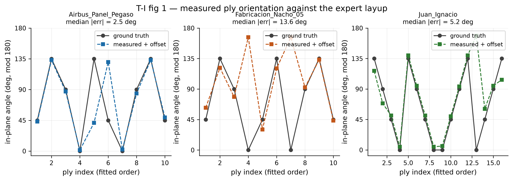
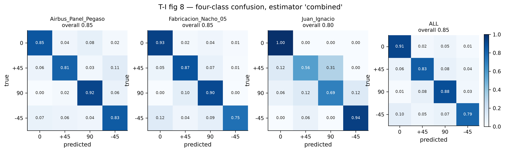
Per volume, two 1024×1024 in-plane windows at 30% and 70% of the y extent, centred in x, per z-slice. Each window is mean-removed, Hann-windowed, 2D FFT. Power is binned into 12 log-radial × 180 angular bins, each divided by its pixel count so there is no square-grid bias, and the angular axis is rotated 90° into the real-space texture frame. The band used is 0.82–3.27 × the volume's own measured ply pitch — per-volume scaled, not fixed.
The two windows are independent measurements of the same ply, so they give a built-in noise estimate. Nacho's larger residual is shared between windows at r = +0.60 — 71% real variance — so Nacho genuinely has about twice Pegaso's ply misalignment, 3.6° against 1.8° standard deviation. Within-ply deviation has lag-1 autocorrelation +0.38, positive in 99% of volumes: spatially coherent fibre waviness. That is why waviness is left for the model to generate rather than being used as a control input.
Slab-averaging inside a ply costs 12 accuracy points — do not do it. Radon adds nothing (it is the Fourier-slice dual of the same FFT). The four _cleaned Pegaso volumes score 0.650 against 0.885: that preprocessing variant damages the signal, and whether to exclude them is still open. Layup A is near-palindromic, so a wrong face ordering changes only two plies and a wrong sign convention swaps all ±45 — the thin fit margins are largely a symmetry artefact.
XCT reconstruction degrades smoothly and monotonically, +16% from 2× to 64×. Porosity-MAE does not: its best values land at 8×–32×, and only z = 1 degrades both. This is why 16× was an easy choice for the production latent.
val.total is unusable hereKL is summed per channel and each channel has a free-bits floor, so the total scales with channel count regardless of model quality. Comparing the sweep on val.total ranks z by arithmetic, not by reconstruction. Use val.xct_loss.
Several small-z shapes triggered a pathological torch.compile autotuner kernel: 7.2–8.5 s/step against a normal 1.8–2.3 s/step, with the GPU at 96% and no throttling. The protocol became: check step time at step 60 and relaunch eager if it exceeds 4 s/step. One 28-hour run was lost to this before the check existed.
Perturbing the latent up to 2× the posterior standard deviation moves mask porosity only from 0.022 to 0.028, and ambiguous voxels stay under 0.5%. The decoder degrades gracefully — decoder robustness is not the binding constraint, which is what licensed the aggressive 16× choice.
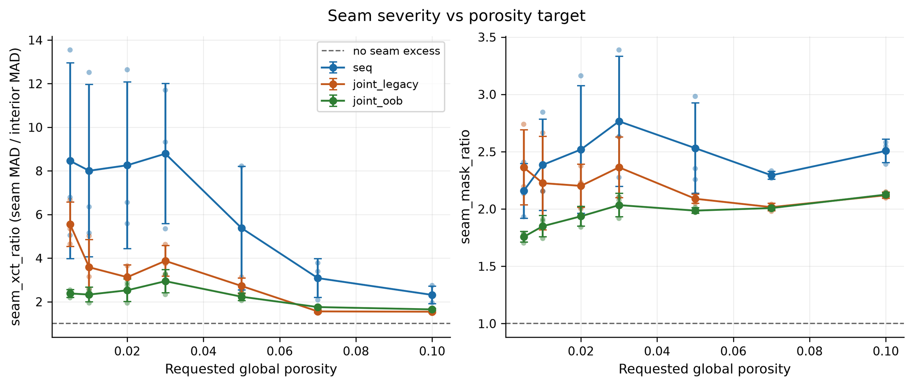
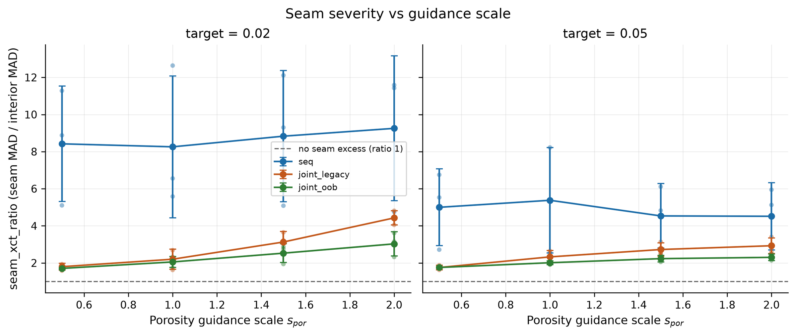
Mean absolute slice-to-slice difference at the patch-boundary planes, divided by the same quantity at interior planes. A value of 1.0 means the seam is statistically invisible against the volume's own texture. The untrained baseline sits at 1.8–2.1. Measured on both the grayscale channel and the mask logits.
Joint denoising nearly halves the grayscale seam but does not improve the mask seam, which stays at 2.0–2.8 in both modes. Pore structure still steps at patch boundaries. This is one of the reasons ldm06 adds a mask-aware auxiliary loss rather than only changing the sampler.
x̂₀ clamp at ±10σ. x̂₀ divides by √ᾱ, which is near zero at high t, so one exploded estimate contaminates the whole trajectory — the ldm03 runaway mechanism. Real normalised latents reach about ±6σ, so ±10 never clips a legitimate value.
Cosine schedule, T = 1000, s = 0.008. Nichol & Dhariwal defaults, not ablated.
ε-prediction. Kept for ldm04 ↔ ldm05 comparability; v-prediction is a separate deferred rung.
DDIM-50 for every in-training evaluation. Note: on an immature model 200 steps measures worse than 50, because more steps follow a bad score field more faithfully. The ordering flips as the model matures — the flip is itself a convergence signature.
EMA 0.9999, and φ requests clamped to the observed data range [0.002, 0.107]: no extrapolation outside training support.
Every 20k steps, roughly one minute of wall clock, reading latest.ckpt from disk with no shared state with the training process.
Raw and EMA weights — raw answers "is it learning", EMA answers "what would we ship".
Split by neighbour-context bucket 0/2/4/6, n = 16 each, pooled 1/3/3/1.
Automatic verdict appended to a JSONL: CONVERGING if the overall std-ratio fell ≥5% since the last check, STALLED within ±5%, REGRESSING if it rose ≥5%, with per-bucket deltas so a stall in one context cannot hide in the average.
Plus a conditioning-alive check at fixed seed, and an on-demand input-contribution probe — the latter was used to refute the input-dilution hypothesis: the first convolution weights the 4 latent channels about 10× above any conditioning group, and zeroing the neighbours moves the output by 37% of the noise scale.
Operates on the decoder-native u8 scale, obtained by exact logit inversion of the sampler's sigmoid, and calibrated on three real validation and test volumes against their ground-truth masks.
1. Real masks are annotations and miss some dark features (drilled holes, edge effects), so pooled Dice ≈0.8 is a ceiling, not a shortfall.
2. The corrected_porosity values written into the per-volume stats.json during phases 1–2 use an earlier, over-inclusive material-referenced threshold. Use the audit's recalibrated per-volume numbers instead.
3. Layup generalisation is demonstrated, not validated: 74 of 78 training volumes share layup A.
4. Three seeds per cell, two for layup. Seed spread is reported; the distributions are not tight enough for fine per-cell ranking.
5. Direct angle scores use the frozen identity convention; fitted variants live in the per-volume layup records.
runs/eval_v2/ is self-contained and copyable: 153 volumes, per-phase findings and results, four audit figures, the per-volume and per-cell tables, and a README that is the single entry point for the campaign.
Every entry carries a dated justification and, where it applies, the decision it supersedes. Two were repealed by measurement within days of being written — which is the point of keeping the log.
Decisions Log D1–D40 · VAE and LDM experiment logs · analyses T-A to T-I, A1/A2, E1, E2 · ldm05 and ldm06 design notes · runs/eval_v2/README.md.